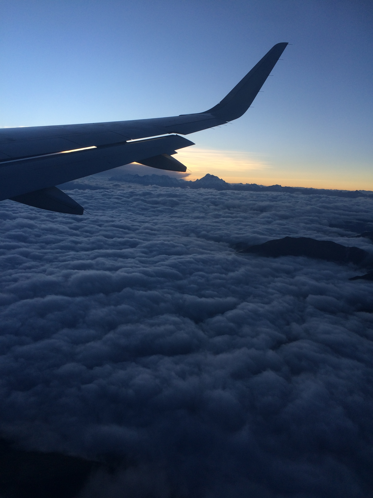
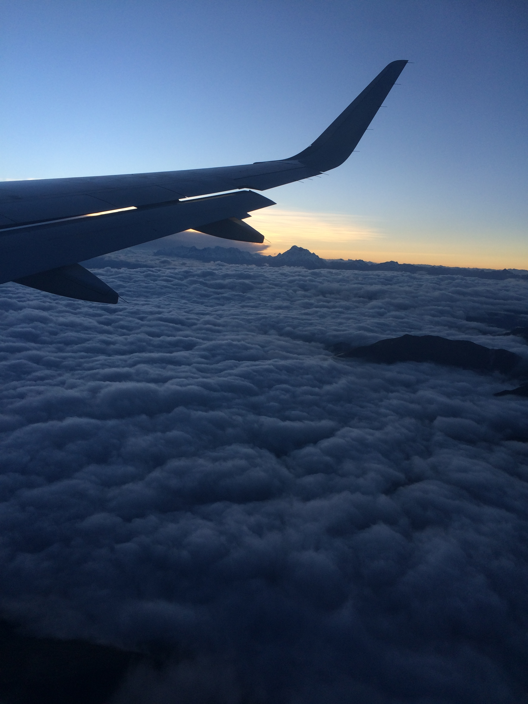

First thoughts in Peru
June 5th, 2015
I’ve been in Peru for just about one month now, and it’s hard to believe I’m a third of the way through my time here. Apologies for taking so long to get this first post up, but I wanted to create my own website first, but just ended up procrastinating until now.
So what am I doing in Peru? I’m primarily here to learn Spanish and also working as the sports coordinator at an after school program called WaaW. On top of these two things (which keep me busy Monday-Friday from 8:00am-7:00pm) I’m taking one-on-one salsa lessons, attending weekly cooking classes, and playing Ultimate Frisbee each Sunday! Almost everything I am doing is coordinated through a small organization called FairServices. It’s really a great organization, and very focused on fairness and providing opportunities to locals. For more information check out their website or get in touch with me!
My Peruvian family has been amazing to me. My first day here they took me to a relative’s birthday party, which was definitely a great way to start my trip. The family turns out to be quite musical, and whenever there is a party in Peru there is always dancing. Something that I found quite interesting was how seriously Karaoke is taken here. People really, really enjoy it – it’s great. My house is located right next to the airport, but it’s really not that bad. There are no flights at night, thank god.
Luckily, I was able to avoid getting sick from the altitude. I did have one bout of sickness, but I am pretty sure it was from food poisoning. I was quite sick, but only for one night. It makes for a bit of a funny story though – I was on the bus, and a lot of the buses here are basically converted minivans, but there are three seats up front. One is for the driver, then two more for whoever wants to sit there. Before the ride I was feeling a bit queasy so I figured I would sit up front. Someone else got in, so I was sitting right next to the bus driver. A few minutes later, I vomited all over my bookbag and myself. I muttered “necesito bajar” trying to tell the bus driver I needed to get off. He responded (translated) “I know, you can get off at the next stop” and handed me a little bit of toilet paper. I really thought it was so bizarre how nonchalant the driver was, but I got off at the next stop and made my way back to my house. The next day I was fine, and was able to attend my salsa lesson!
Cusco is an extremely poor city, with only 9% upper class, and 12% middle class, but nevertheless Cusco is really gorgeous with tons of history, culture, and pride. The population is a bit greater than half a million, but there are 2.5 million tourists each year (so I’ve been told). The voluntourism industry is in Peru is enormous. On my flight here there was three large groups of volunteers around my age (one was from Western!), and while I’ve been here I constantly run into voluntourists. Just the other night we went out to dinner to celebrate someone’s birthday and there was a table of roughly 12 people about my age (possibly younger) all wearing scrubs and speaking english. I find it absolutely shocking to be quite honest.
The food here has been pretty good too, for the most part. Cuscaneans eat an absurd amount of chicken and rice. I don’t know if there has been a day yet that I haven’t had rice at least once. My homestay mother is a very good cook though, so most of the time the food is perfectly fine. There is quite a bit of Peruvian cuisine that is delicious though. My favourite so far is definitely Picaronnes. They are basically donuts, but they are made out of sweet potato, pumpkin, and drizzled with honey. So they’re really not that bad for you, and are so delicious. I have yet to try many of the staple dishes though, such as cuy (guinea pig). I’m sure that will be interesting.
The culture here is quite different from Canada, obviously. Here’s some examples: when greeting or saying goodbye, it is always a kiss on the cheek with women and a handshake with men. It’s not rude to call someone fat. Everyone loves dancing, and they often will have dancing class in schools. If kids are caught having a cell phone in class, the teacher takes it and keeps it until DECEMBER. Many of the bars are open until 5:00am. Clubs are called Discos or Discotecas. It is mandatory to vote, and when it is the voting period all of the bars and discotecas are closed. These are just a few examples of the cultural differences between here and Canada, many of which I find very interesting.
I am enjoying my time here immensely, while of course missing home. That’s all for now, I’m going to try and post more often from now on, so please check back for more posts in the future!
Here's a few pictures from my trip so far.
 

Sacsaywaman — somehow I managed to get in for free! The right was taken on the flight from Lima to Cusco, spectacular scenery